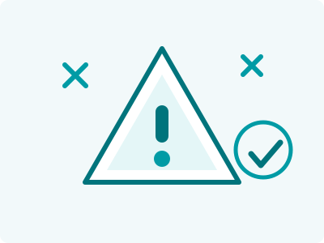

Guía · LanzamientoGuide · Launch

Después de fabricar para decenas de marcas —y de lanzar las nuestras— hemos visto los mismos tropiezos repetirse una y otra vez. La buena noticia: todos son evitables si los conoces antes de empezar.
After manufacturing for dozens of brands — and launching our own — we've seen the same stumbles repeat over and over. The good news: all of them are avoidable if you know them before you start.
Divide tu presupuesto, triplica tus mínimos y confunde tu mensaje. Empieza con un producto estrella, valídalo, y expande la línea con las ganancias del primero.
It splits your budget, triples your minimums and muddles your message. Start with one hero product, validate it, and expand the line with the first one's profits.
Poner 50 mg de un activo que funciona a 500 mg abarata el costo… y garantiza que el producto no haga nada. El cliente no repite, las reseñas lo dicen, y la marca muere. Dosis eficaces o nada.
Using 50 mg of an active that works at 500 mg lowers cost… and guarantees the product does nothing. Customers don't repurchase, reviews say so, and the brand dies. Effective doses or nothing.
El precio más bajo casi siempre esconde algo: materias primas sin verificar, cero análisis de lote o nula trazabilidad. El riesgo lo corre tu etiqueta. Pregunta siempre por la NOM-251 y el sistema de calidad.
The lowest price almost always hides something: unverified raw materials, no batch testing or zero traceability. Your label carries the risk. Always ask about NOM-251 and the quality system.
Es la causa #1 de retrasos en primeros lotes — y de problemas regulatorios después. La etiqueta se trabaja en paralelo con las muestras, no cuando la producción ya está programada. (Tenemos un checklist completo aquí.)
It's the #1 cause of first-batch delays — and of regulatory trouble later. The label is worked on in parallel with samples, not once production is already scheduled. (Full checklist here.)
Muchas marcas gastan todo en el primer lote y el marketing… y cuando el producto por fin rota, no hay capital para reordenar. Quedarte sin inventario en tu mejor momento es carísimo. Reserva desde el inicio el capital del segundo lote.
Many brands spend everything on the first batch and marketing… and when the product finally moves, there's no capital to reorder. Running out of stock at your best moment is very expensive. Reserve second-batch capital from day one.
Si tu producto es idéntico al más vendido pero sin su marca, solo puedes competir por precio — la peor posición para una marca nueva. Diferénciate en algo real: dosis, ingrediente estrella, sabor, formato o nicho.
If your product is identical to the bestseller but without its brand, you can only compete on price — the worst position for a new brand. Differentiate on something real: dose, hero ingredient, flavor, format or niche.
La muestra existe para eso: pruébala varios días, dásela a tu cliente ideal, disuélvela, guárdala al calor. Cada ajuste antes de producir cuesta poco; después del lote, cuesta el lote.
That's what samples are for: try it for several days, give it to your ideal customer, dissolve it, store it in heat. Every adjustment before production costs little; after the batch, it costs the batch.
Un buen maquilador te advierte estos errores antes de que cuesten dinero — es parte del trabajo. Cuéntanos tu proyecto y revisémoslo juntos desde el inicio.
A good manufacturer warns you about these mistakes before they cost money — it's part of the job. Tell us about your project and let's review it together from the start.
Cuéntanos tu idea y recibe una cotización en 3-5 días hábiles.
Tell us your idea and receive a quote within 3-5 business days.
Cotizar mi proyectoRequest my quote